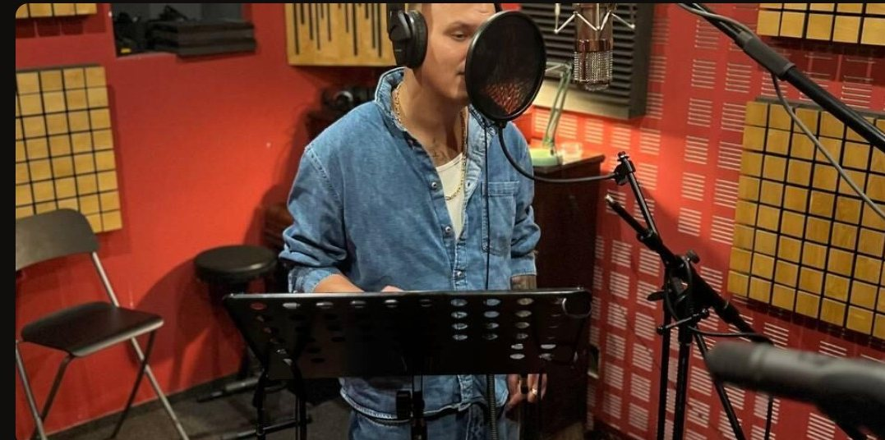
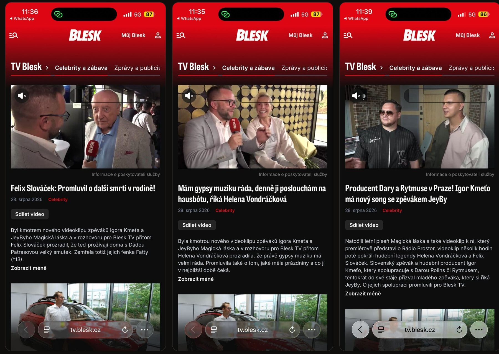

Neprodáváme hotový příběh. Nabízíme místo u jeho vzniku – v hudbě, klipech, na pódiích i na sítích JeyBy.

kliků na tři videa Blesk TV z jednoho křtu klipu.

Nejde o logo v rohu. Jde o značku, která přirozeně žije v hudbě a příběhu JeyBy.
Vytvořme něco, co bude vidět i slyšet. Navrhneme koncept přímo pro vaši značku.
Neprodáváme hotový příběh. Nabízíme místo u jeho vzniku – v hudbě, klipech, na pódiích i na sítích JeyBy.
Domluvme si 20 minut Nabídka v PDFkliků na tři videa Blesk TV z jednoho křtu klipu.
Nejde o logo v rohu. Jde o značku, která přirozeně žije v hudbě a příběhu JeyBy.
Vytvořme něco, co bude vidět i slyšet. Navrhneme koncept přímo pro vaši značku.
Domluvme si 20 minut Nabídka v PDF